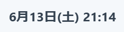
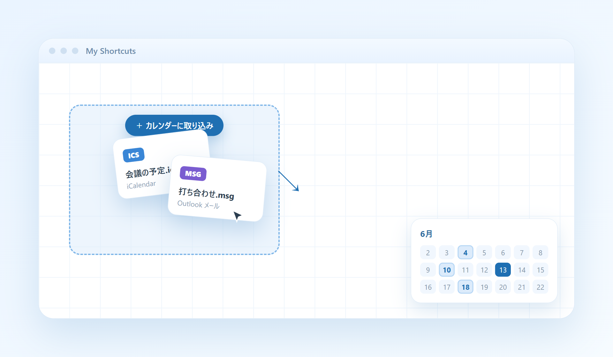

探すのも、予定も、画面の上から。
置いたものをすぐ見つけて、Web もそのまま調べる。予定も、いつも見える所に。
検索
見つける。そのまま、調べる。
画面いちばん上のバーから、2 とおりの探しかた。
-
1
アプリ内の検索
上部の検索ボックスに打つと、名前の合うものだけがすっと残ります。たくさん並んでいても、目当てのアイコンへ一直線。
入力を消すか、× を押せば、もとの並びに戻ります。

-
2
Web 検索
調べたいことは、わざわざタブを開かなくても大丈夫。上部のボタンを押すか、デスクトップの何もない所をダブルクリックすると、検索ウィンドウがその場に開きます。
上部の Web 検索ボタン。

デスクトップのダブルクリックでも、同じウィンドウが開きます。
カレンダー
予定は、すぐそこに。
上部の日付から開いて、その場で書き込み。手元のファイルから取り込むこともできます。
-
1
カレンダーを開く
画面右上の日付を押すと、その月のカレンダーが開きます。予定のある日には、件数とタイトルがちらりと表示。今日の場所もひと目でわかります。

画面右上の日付を押すだけ。
-
2
予定を記入する
日付を選んで「新規」。タイトルとメモ、開始・終了の日時を入れて保存するだけ。その日に入っている予定も、ここで一覧できます。
-
3
ファイルから取り込む
もらった予定ファイルは、デスクトップにドロップするだけ。
.ics（iCalendar）や.msg（Outlook）の予定を、まとめてカレンダーに取り込めます。同じ予定は重ねて入りません。